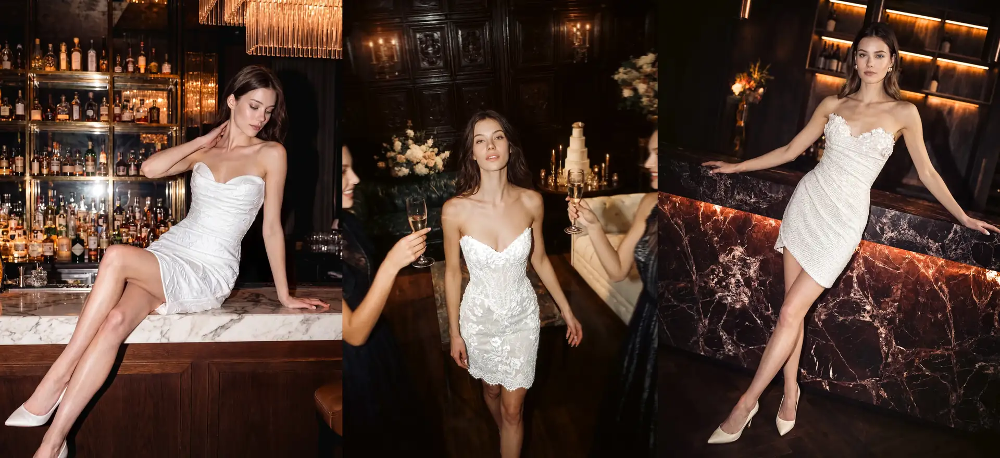
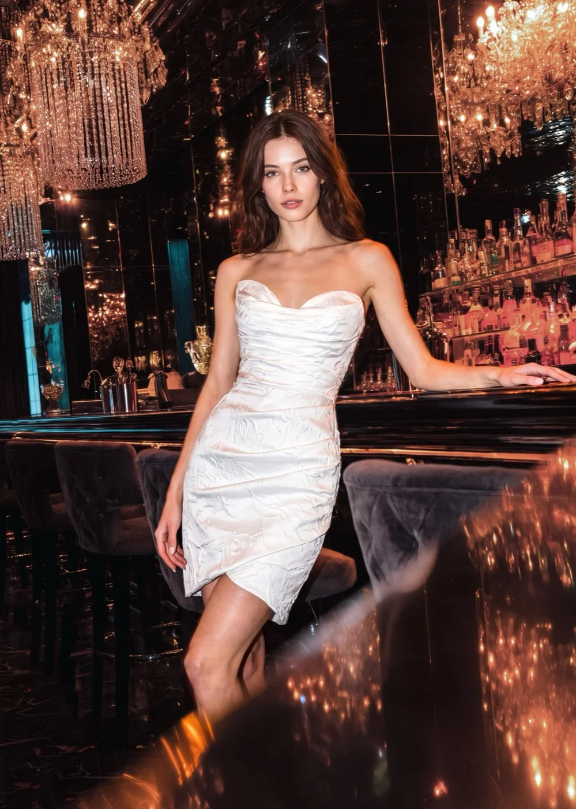
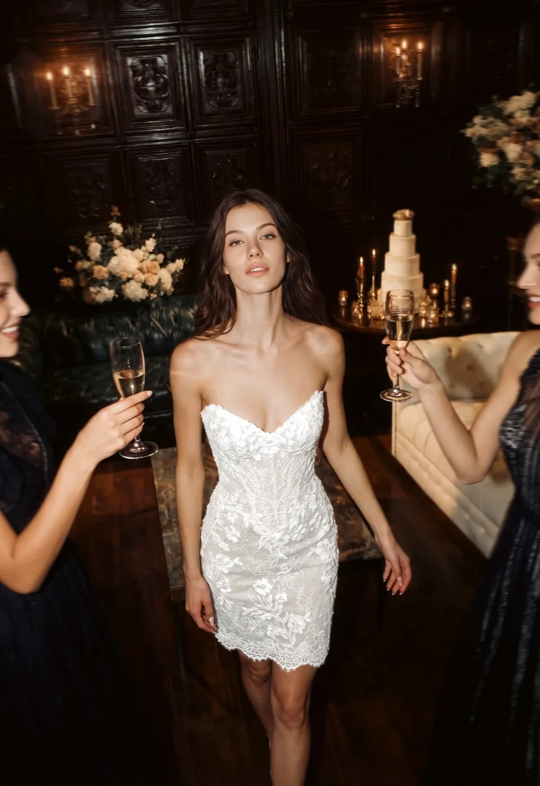
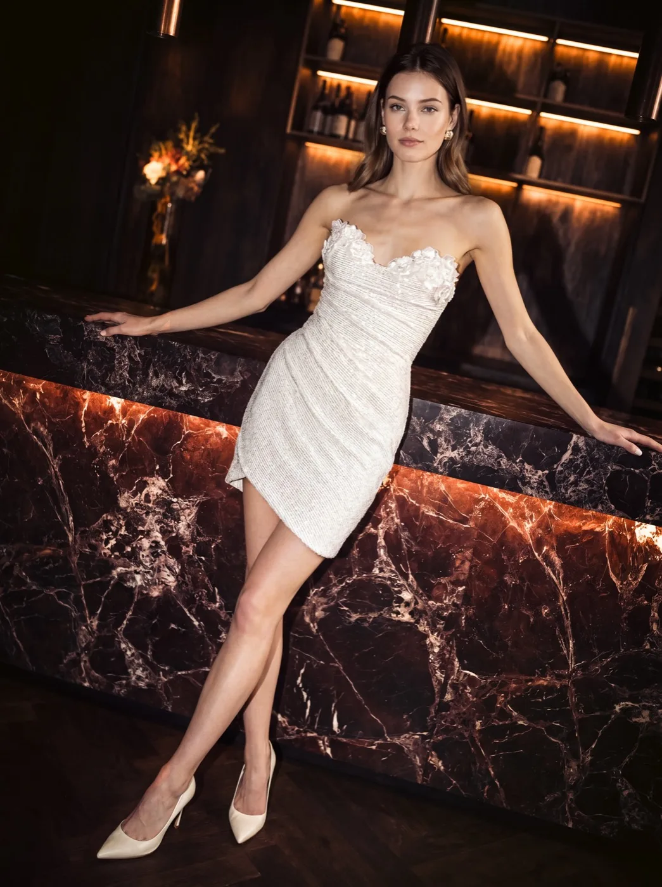

Pour la mairie, un mariage civil ou pour danser toute la nuit, la robe courte a ses adeptes. Voici nos 3 robes de mariée courtes signées Modeca, à essayer dans notre boutique de la rue des Remparts d'Ainay, à Lyon, à quelques minutes à pied de Bellecour.



Une robe vous plaît ? Notez son nom et venez l'essayer.
Prendre rendez-vousPourquoi choisir une robe de mariée courte ?
Pas de traîne à porter, pas de jupe à relever pour marcher : la robe courte vous laisse libre de vos mouvements. Elle s'arrête au-dessus du genou ou à mi-cuisse et met les jambes et les chaussures en valeur.
Nos modèles ont tous un bustier ajusté avec un décolleté en cœur, et chacun a sa matière : brocard texturé, dentelle florale ou tweed pailleté. Ce sont de vraies robes de mariée, pas des robes de cocktail blanches.
Mairie, deuxième tenue ou robe principale ?
- Pour le mariage civil : c'est l'usage le plus courant. La robe courte est élégante à la mairie sans faire trop habillé, surtout si la cérémonie religieuse ou la réception a lieu un autre jour.
- Pour la soirée : beaucoup de mariées changent de tenue après le dîner. On garde la grande robe pour la cérémonie et les photos, et on passe à la robe courte pour danser.
- Comme robe unique : pour un mariage en petit comité ou une mariée qui sait ce qu'elle veut, la robe courte peut très bien suffire.
À qui va la robe de mariée courte ?
Une robe courte allonge la silhouette en dégageant les jambes : c'est souvent un bon choix quand on est petite et qu'on a peur d'être « perdue » dans une grande robe. Une coupe ajustée, comme le fourreau, marque les formes ; un drapé asymétrique structure la silhouette tout en restant flatteur.
L'essayage reste le meilleur moyen de voir ce qui vous va. Votre conseillère vous aidera à choisir la longueur et la coupe selon votre morphologie.
Les détails à prévoir
- Les chaussures : avec une robe courte, elles se voient. Apportez à l'essayage une paire proche de celle que vous porterez.
- La saison : en hiver, une veste ou une étole complète la tenue pour la sortie de la mairie.
- Le voile : un voile court ou un accessoire de cheveux garde l'esprit mariée sans alourdir la tenue.
Vous hésitez encore sur le style ? Découvrez aussi nos robes de mariée bohème et robes de mariée princesse, ou lisez notre guide : comment choisir sa robe de mariée.
Essayer une robe de mariée courte à Lyon
Nous trouver
9 rue des Remparts d'Ainay
69002 Lyon, quartier Ainay
À quelques minutes à pied de la place Bellecour
Horaires
Du mardi au vendredi : 10h30 – 19h
Samedi : 10h – 19h
Fermé le dimanche et le lundi
Essayages uniquement sur rendez-vous.
Rendez-vous Découverte Gratuit
1 heure, 3 à 5 robes, jusqu'à 2 accompagnants. Dites-nous que vous cherchez une robe courte : la sélection sera prête à votre arrivée.
Rendez-vous Privilège 50 €
1h30, boutique privatisée, robes et accompagnants illimités. Les 50 € sont déduits du prix de votre robe si vous l'achetez.
Réserver mon essayageAvis de nos mariées
5,0 / 5 sur Google
« Un moment absolument exceptionnel et inoubliable ! Isabelle est merveilleuse, accueillante, à l’écoute, bienveillante et extrêmement professionnelle. Grâce à elle j’ai trouvé la robe parfaite. »
« Je suis arrivée peu sûre de moi car j’ai du mal à me regarder dans le miroir mais je me suis sentie à l’aise, je me suis sentie entendue, je me suis même sentie belle ! Les conseils sont justes et toujours valorisants. Je recommande cette boutique à 100 % ! »
« Franchement, essayage incroyable. Isabelle et Apolline d’une douceur et d’un professionnalisme juste parfait. J’ai trouvé mon coup de cœur, j’en suis très contente. »
« On a été très bien reçues avec mes deux copines. La dame qui nous a reçues avait de très bons conseils. Elle m’a fait essayer beaucoup de robes. Je suis super contente de cette visite qui a été parfaite. »
Vos questions sur la robe de mariée courte
Quelle robe porter pour un mariage civil ?
Une robe de mariée courte est un choix très courant pour la mairie : élégante, facile à porter et adaptée à une cérémonie plus courte. Si vous préférez une robe longue, choisissez un modèle simple et léger.
Peut-on porter deux robes le jour de son mariage ?
Oui, et c'est de plus en plus fréquent : une robe longue pour la cérémonie et les photos, puis une robe courte pour la soirée. Vous pouvez essayer les deux lors du même rendez-vous.
Quelle robe de mariée choisir quand on est petite ?
Une robe courte ou une robe longue peu volumineuse. La robe courte dégage les jambes et allonge la silhouette ; évitez surtout les jupes très amples, qui peuvent écraser une petite taille.
Où trouver une robe de mariée courte à Lyon ?
Chez Pronuptia Lyon, 9 rue des Remparts d'Ainay, dans le 2e arrondissement. Les robes de cette page s'y essaient sur rendez-vous, dans un espace privatif.
Essayez nos robes courtes
à la boutique
Un essayage dans un espace privatif, avec vos proches et une conseillère qui vous accompagne du début à la fin.
Réserver mon essayage